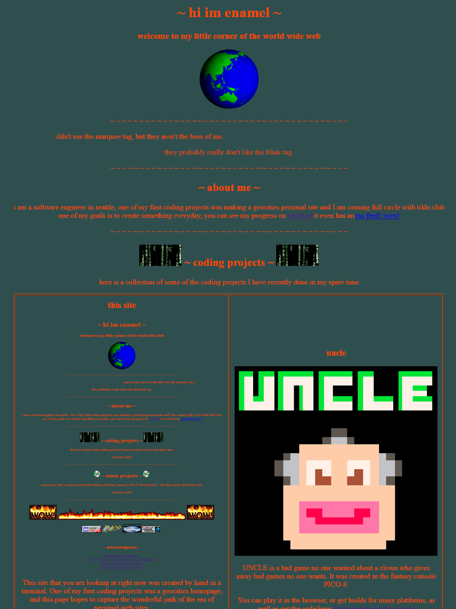
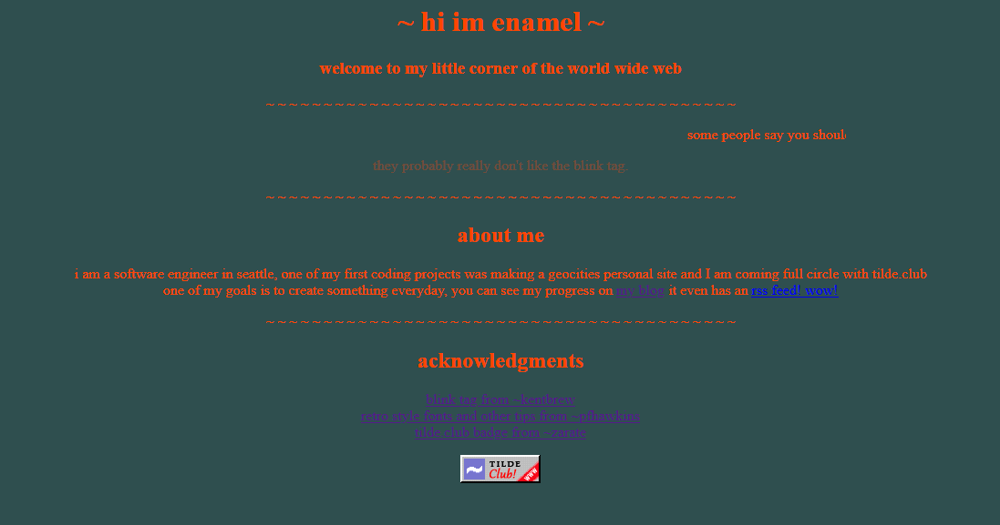

everydays 8
Planned on filling out the music section of my homepage, but some of the stuff I did on twitch didn't want to embed. Ended up being a bit of a time sink. I figured it out, but by then I was aleady invested and moving it to youtube to host.
So a fair amount of time invested all I have have to show for it is a blog post
streak 8
tags: everydays
algorhythms
"Live coding" in the general sense is creating art using code, usually on the fly in an improvisational way.
I have been playing around with music production using a patterning language Tidal Cycles, where you can create patterns and sequences of samples and synths among other things.
Here are a few of my explorations using it
tags: bleep-bloops, tidal-cycles, live-coding
everydays 7
Updated the homepage to include a table of some of my personal coding projects as well as some CSS to at least de-jank it a little bit. It grew so much with hashtag content! Here is what it looks like now:
streak: 7
tags: everydays, homepage-update
everydays 6
Nearly skipped today, just was not feeling it. Like yesterday I wanted to do something quick, but ended up getting into it and fiddling for an hour. Sensing a pattern.
I downloaded some period correct gifs to make my homepage really pop. I am nearly 100% sure I found the same CD gif I had on my geocities page in the 90s. Anyway, now my homepage looks like this:

streak: 6
tags: everydays, homepage-update
everydays 5
Tried to find something quick to update, still ended up spending an hour fiddling with the CSS on this blog. I largely followed (aped) the design guidelines at google's material dark theme.
I also reformatted the main css file, and when doing so realized I was un-minifying it and making the file size larger for my own feelings of vanity. Going to look into a script to take my pretty format and minify it to reduce the file size. If you are going for small static HTML, might as well go all the way right?
streak: 5
tags: everydays, homepage-update
everydays 4
worked on my index.html, created a .css file and learned how to upload an image via scp
today my homepage looks like this:
current streak: 4
tags: everydays, homepage-update
everydays 3
changed index.html in the most minor way, testing my own internal rules for everydays
streak: 3
update: I made this update 2: and thistags: everydays
everydays
A concept that has stuck in my mind recently is the concept of "everydays" where one commits to an act of creation every day. I came across this idea from the visual artist beeple, who as of this writing has completed 4824 consecutive days of creating a piece from scratch every day. Another form is "100 Days of Code" which is a challenge to complete 100 days of coding without missing two consecutive days.
The rules for people's everydays differ, but the main goal is skill building, and committing to this publically provides accountability. In beeple's case his rules are to create something, anything no matter if it is 5 minutes or 5 hours of work, as long as it is submitted to the internet before midnight. For 100 Days of Code their rules are an hour of coding before you go to sleep that night, and missing a day is ok.
My goal for everydays primarily skill building and working on personal interests. Also I want to break a bad habit that I have of working on a personal project using all of my spare time, then burning out so that I take a long break from working on personal projects. I am very bad at spending "an hour a night" on something until it is done. Leaving something unfinished until tomorrow. My problem is not that I will cheat and pump out 5 minutes of crap and call it my everyday, but that I will spend 4 hours polishing that turd every night for weeks, on top of my normal programming job, until I don't want to see an IDE for a month. So not only do I want to continue to create and learn, but I want to learn how to do it sustainably.
My rules:
- Work on a personal project every day
- Make a blog entry about it
- Between waking and sleeping
- No minimum time duration
- Learning tools counts
- Streaks are neato, but not the goal
Everyday #1: Yesterday I explored my tilde.club account. I decided I did not care for PuTTY so I worked out a better toolchain for SSH on windows, using Windows Terminal, Powershell, and OpenSSH. I learned the basics of weechat. I created a git repo of my home dir and pushed it to github here.
Everyday #2: Today I figured out how to create a blog using bashblog and created two posts, an introduction and the post you are reading now (I am actually going to be really surprised if someone reads this). I developed my personal rules for my everydays and committed to them live on the internet.
tags: everydays
Hi, I'm enamel.
I have been thinking of self-hosting a personal site for some time and after a discussion with a friend about getting people together to write silly geocities style web pages, the internet lead me to tilde.club where people were doing just that. I figured doing it as a part of a community effort would be more fun / interesting than going it on my own, so here I am.
In the past I have tried and failed to blog as a part of a professional portfolio, which went nowhere. This time I plan on keeping it light and about personal projects, and keeping posts short.
A bit about me. I am a professional software developer in Seattle that specializes in Windows desktop apps. I have been trying to make an effort to explore new technologies (like pubnix) and just generally create more for personal fulfillment. I will post more about the things I have done as I create my homepage, but I generally work on tools, and have been playing around with making music and recently made my first (very very small) game.
tags: tildeverse, personal